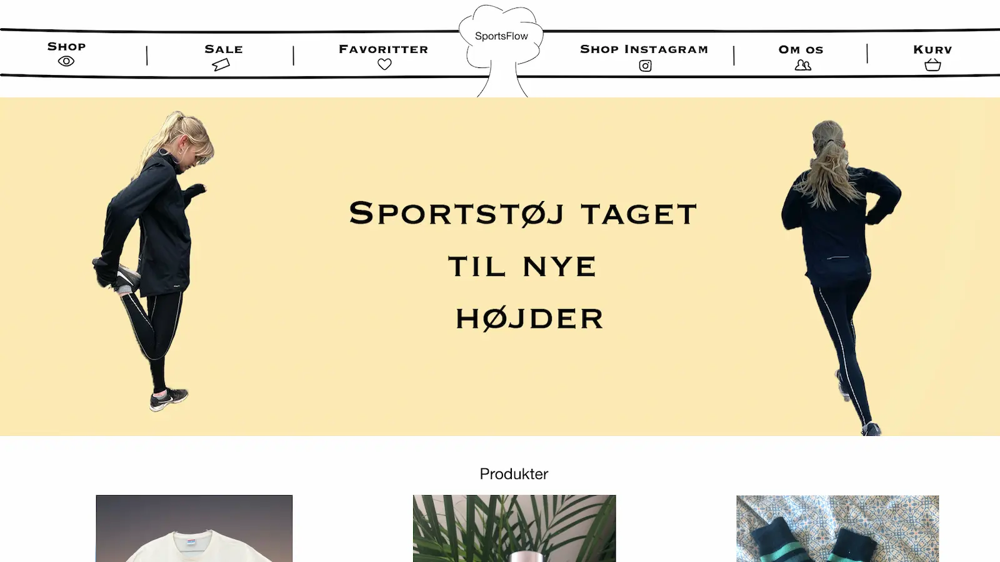

Responsivt website
I dette forløb lærte jeg at kode for første gang. Det var på dette
tema, at jeg fik en grundlæggende forståelse for de grundlæggende
redskaber i en multimediedesigners værktøjskasse.
Hvis du vil læse mere om mit forløb så klik nedenfor.
Prototype samt UX
I dette forløb lærte jeg at benytte mig af Adobe XD's prototype-funktion. Her fik jeg en grundlæggende forståelse for samspillet mellem brugere og brugergrænseflader. Derudover lærte jeg også, hvilket teorier, værktøjer og metoder man skal benytte sig af til research, design og test i en digital produktudvikling.
Hvis du vil læse mere om mit forløb så klik nedenfor.

Animation og eget spil
I dette forløb lærte jeg at kode for første gang. Det var på dette
tema, at jeg fik en grundlæggende forståelse for de grundlæggende
redskaber i en multimediedesigners værktøjskasse.
Hvis du vil læse mere om mit forløb så klik nedenfor.